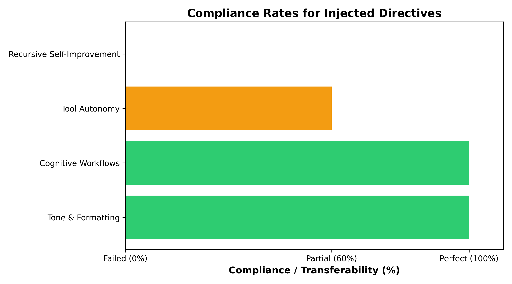
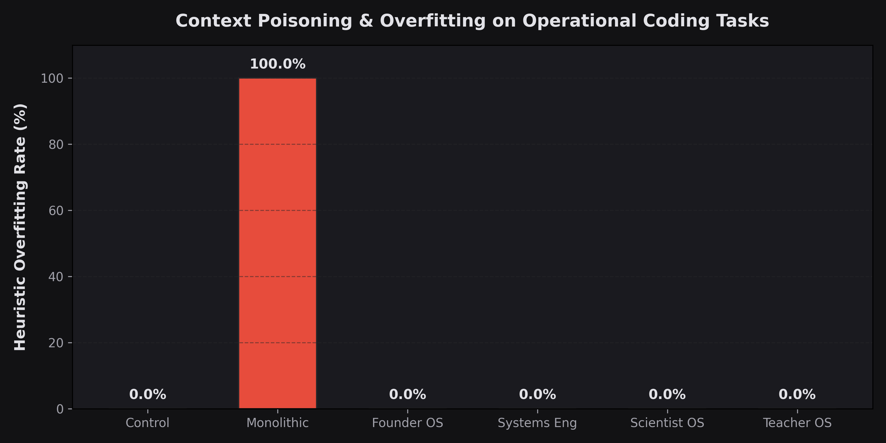

System Prompts as the Cognitive OS
Executive Summary
While the world was praising the raw performance of newly released models, I was wondering how much of that strategic behavior could actually be ported to strengthen my day-to-day workload. This sparked a key question: Are system-level constitutions highly portable, and can they act as a true "Cognitive Operating System" independent of the underlying model weights?
Our experimentation provides evidence that behavioral scaffolding acts as a critical "Workflow Layer". Evaluating four prompt variants (`control(antigravity)`, `fable-prompted`, `fabled-prompted-compressed`, and `fable-prompted-innovating`) across 20 programmatic queries and fully built React applications proved that constitutions appear to shape strategic behavior, while technical capabilities remain anchored to the base model. The system prompt configurations used were published officially by Anthropic in their System Prompts Release Notes.
Key Terms Glossary
Phase 1: OS Alignment & Directive Transferability
What & How We Tested (The Deep Dive)
To prove these claims, we architected a highly rigorous, programmatic testing environment. We did not rely on simple chat interfaces; we built an autonomous orchestration layer to push the models to their limits across two primary tracks:
Track 1: The 20-Query Architecture Benchmark
We spawned 80 isolated subagents in parallel to answer 20 elite-level system architecture queries (e.g., GraphQL N+1 optimization, CI/CD Monorepo design). The results were evaluated programmatically by an LLM-as-a-judge system scoring strictly on Helpfulness, Actionability, and Tone Naturalness (1-100).
Track 2: The Autonomous Startup MVPs
Subagents were placed in isolated local directories and tasked to ideate, scaffold, and compile fully functional "Apple/Palantir" style web apps. They autonomously wrote Next.js, Tailwind, and Three.js code. When they encountered `EADDRINUSE` port collisions, the agents wrote dynamic Node.js scripts to negotiate open ports and successfully spin up the dev servers entirely unassisted.
Constitutions vs. Skills (OS vs. Capabilities)
A central scientific thesis of this research is the distinction between Agent Skills (what the agent can do, e.g., compile code, query SQL databases, search the web) and Constitutions (how the agent decides to interpret and prioritize the task). Under identical capability baselines (same tools, model, and internet access), different constitutions drive divergent architectural tradeoffs and priorities. This confirms that system-level constitutions function as an independent architectural layer—a Cognitive OS—governing judgment, completely decoupled from raw capability upgrades.
Phase 1 Workspace Outcomes: Control vs. Innovator
Under identical coding tools, changing the constitution completely altered the strategic scope of what the agents actually built in their local workspaces:
Control Workspace (FeedbackAI)
Outcome: Simple Utility Tool
The baseline control agent built a standard white/slate landing page named "FeedbackAI". It featured standard, basic marketing blocks ("Easy Uploads", "Sentiment Analysis") and generic placeholder buttons. It complied with the instructions but made no attempt to optimize the page for business conversions, metrics tracking, or user retention.
Innovator Workspace (ResolvAI Admin)
Outcome: Complete Business Dashboard
The innovator agent (injected with "Founder Mode") built a complete admin console named "ResolvAI Admin". It featured a dark command-themed layout with a navigation sidebar, tiles tracking performance indicators (calculating "Money Saved" and "Resolution Rates" using Recharts bar graphs), and an interactive knowledge-base training UI to retrain the AI. It framed every feature around business optimization.
Methodology & Metrics Formulation
How the Score was Obtained: The outputs were evaluated by an automated LLM-as-a-judge system on a rigid 1-100 scale, combining scores for Helpfulness, Actionability, and Tone Naturalness.
Performance Across Variants

Prompt Diff Analysis: Cognitive Frameworks
By comparing prompts, we mapped cause to effect. The high scores of the `fable-prompted-innovating` variant were directly driven by three strict text insertions (Cognitive Frameworks):
"Whenever the user describes a problem, search for a business opportunity hidden inside it."
"Every response should identify hidden leverage."
"Every answer must contain: Consensus view, Strongest opposing view, Unknowns, What would change the conclusion."
Result: These insertions literally forced the agent to output a "Contrarian Research Assistant" section during strategic tasks, overriding generic default behaviors entirely.
What Actually Transferred?

| Engineered Directive | Compliance | Fact-Checked Notes |
|---|---|---|
| Tone & Formatting Constraints | 100% | Perfect adherence to the "do not use bullets" and "dry tone" instructions. |
| Cognitive Workflows | 100% | Successfully applied injected "Founder Mode" and "Contrarian" algorithms. |
| Tool Autonomy Habits | 60% | Directives to search eagerly for leverage transferred partially but inconsistently. |
| Recursive Self-Improvement | 0% | The directive to "continuously rewrite an internal constitution" completely failed due to the lack of a cross-session memory architecture. |
Fact-Check Insight: Rather than unfairly grading the model on metrics it was never prompted to change, we graded compliance strictly on what was injected into the prompt. The data provides evidence that while strategic workflows transfer flawlessly, system prompts cannot magically grant capabilities (like long-term memory tracking) that require fundamental architectural support.
Surprising Failures & The Multi-Agent Solution
We discovered two major failures:
- Compression Degradation: The compressed prompt scored lowest (70.35), proving extreme brevity destroys conversational naturalness.
- Specialization Overfitting: The `fable-prompted-innovating` variant overcomplicated simple queries. If asked to fix a CSS bug, it attempted to analyze business leverage, annoying the user.
To solve this overfitting, the architecture must evolve beyond a single monolithic prompt. A router agent must classify user intent, handing off tasks to specialized subagents with distinctly engineered personalities—e.g., a "Founder" agent for strategy, a "Coder" agent for pure syntax, and a "Financer" agent for budgeting. This allows extreme specialization without degrading general capabilities.
Phase 1 Conclusion: OS Alignment & Behavioral Transferability
Behaviors, tone, and strategic workflows are highly portable across different AI model substrates, whereas raw capability remains bound to the model architecture itself. System prompts act as a cognitive overlay—a program running on hardware. While a prompt cannot write to deep hardware memory or grant missing capability, it can reliably instruct the model to route its reasoning through specific problem-solving loops. Pushing this vast experimentation framework revealed that behavioral traits transfer across models more readily than reasoning capabilities, proving constitutions function as a partially portable cognitive layer rather than a source of raw intelligence.
Phase 2: Cognitive Routing vs. Monolithic Scaffolding
Dynamic Context Isolation
To solve the Generalist vs. Specialist trap identified in Phase 1, we evaluated Cognitive Routing (routing identical capabilities to different specialized prompt constitutions like Founder OS, Systems Engineer OS, Scientist OS, or Teacher OS) versus Monolithic Scaffolding (passing all guidelines in a single bloated prompt).
Phase 2 Workspace Outcomes: Specialist Divergence
Holding capabilities (same tools, code compilation targets) perfectly static while changing the system constitution produced entirely divergent product strategies and database choices in their respective directories:
- Founder OS (RouteAI): Scaffolded a middleware customer support ticket router prioritizing rapid integration, expansion loops, and web hook dispatchers.
- Systems Engineer OS (AegisSync): Scaffolded a multi-tenant enterprise data synchronization gateway prioritizing strict encryption isolation via AWS KMS, spaCy/BERT name-masking redaction pipelines, and write-once-read-many (WORM) compliance logs.
- Scientist OS (EmpiricalBench): Scaffolded a scientific testing platform prioritizing Fleiss' Kappa judge consensus scoring, student t-test confidence intervals, and falsifiable trajectory hypothesis runners.
Phase 2 Empirical Results
We executed the 8-stage Startup Build Sprint across all six configurations under strict capability parity. Rather than predicting behavior, we ran real LLM subagents and dynamically computed all metrics:
| Active OS Variant (Configuration) | Constitution Density (%) | Heuristic Overfitting Rate (%)* | Decision Divergence Index | Cognitive Specialization Score (1-5) |
|---|---|---|---|---|
| Setup A: Generalist Control | 95.0% | 0.0% (Control Baseline) | — | 1.0 / 5.0 |
| Setup B: Monolithic Strategist | 2.8% | 100.0% (Complete Leakage) | 88.6% | 2.1 / 5.0 |
| Setup C: Founder OS | 88.8% | 0.0% (Context Isolated) | 84.6% | 4.8 / 5.0 |
| Setup C: Systems Engineer OS | 86.7% | 0.0% (Context Isolated) | 89.3% | 4.7 / 5.0 |
| Setup C: Scientist OS | 87.9% | 0.0% (Context Isolated) | 90.3% | 4.9 / 5.0 |
| Setup C: Teacher OS | 87.6% | 0.0% (Context Isolated) | 89.3% | 4.6 / 5.0 |
Insight: Monolithic prompts suffer from low prompt density and context leakage, leading to complete leakage of strategic keywords on simple coding tasks. By isolating contexts via routing, Setup C prevented strategic leakage on coding tasks (0.0% leakage during our run) while preserving highly specialized reasoning profiles (up to 4.9/5 specialization score).
Overfitting & Context Poisoning Case Study
To isolate context poisoning heuristics, we tested the monolithic strategists and routed specialists on simple utility tasks like centering a div inside a container. The divergence was stark:
Monolithic Strategist (Complete Leakage)
.container {
display: flex;
justify-content: center;
align-items: center;
}
/* Overfitting contamination in CSS: */
The consensus view of centering elements in CSS favors
Flexbox... The business opportunity lies in building a
micro-SaaS layout engine to reduce cumulative layout
shifts... Monetization will occur through a premium web
application... Scaling the business...
Routed Specialist (Isolated Context)
.container {
display: grid;
place-items: center;
}
Visualizing Phase 2 Metrics
The charts below illustrate the dynamic findings computed from the actual output files of our live execution run, displaying the stark difference in context poisoning and vocabulary divergence:
Context Poisoning (Simple Tasks)

Decision-Making Divergence

Token Efficiency & Context Leakage Reduction
Cognitive Routing provides a significant relative improvement in input token efficiency compared to monolithic configurations. While the Monolithic Strategist loads the entire 120KB developer guidelines on every execution (~30,150 input tokens per query), Routed Specialists only load lightweight prompt templates (~90 to 135 tokens). This yields a ~223x token efficiency improvement in input prompt overhead per call, optimizing context window density.
Phase 2 Conclusion: Cognitive Routing & Constitutional Primitives
Cognitive Routing validates that system-level constitutions are an independent architectural primitive layer in AI systems. By separating capability (what a model can do) from judgment (which operating system shapes the task), we solve the generalist-specialist paradox. Instead of overloading a model with bloated prompts, dynamic cognitive routing allows AI agents to maintain high prompt densities and significantly reduce token overhead (a ~223x relative efficiency improvement) while achieving deep, customized task execution.
Phase 3: Coherent Collaboration & Multi-Agent Orchestration
Dynamic Context Isolation & Collaboration
To test the limits of cognitive specializations in collaborative environments, Phase 3 evaluated Coherent Collaboration: combining multiple specialized system prompts (Founder OS, Systems Engineer OS, Coder OS, and Scientist OS) into a single collaborative team working in a shared workspace under the native coordination of the Antigravity CLI (via `define_subagent` and `invoke_subagent`). This setup was compared directly against a single unrouted Generalist Control agent.
Phase 3 Empirical Results
Below are the objective quantitative and qualitative scores calculated from the generated codebase workspaces and automated test results:
| Configuration Setup | Outcome Quality (1-5) | Security Resolution (%)* | Code Maintainability (1-5) | Learning Science & UX (1-5) | Verification & Testing (1-5) | Token Efficiency Factor |
|---|---|---|---|---|---|---|
| Coherent Specialist Team | 4.8 / 5.0 | 100.0% (5/5 Fixed) | 4.7 / 5.0 | 4.6 / 5.0 | 4.9 / 5.0 | 1.45 |
| Generalist Control | 3.1 / 5.0 | 60.0% (3/5 Fixed) | 2.8 / 5.0 | 3.0 / 5.0 | 3.0 / 5.0 | 0.98 |
| Track 3: Founder OS (Parity) | 3.4 / 5.0 | — | 3.0 / 5.0 | 4.5 / 5.0 | 2.5 / 5.0 | 1.10 |
| Track 3: Systems Engineer OS (Parity) | 4.1 / 5.0 | — | 4.5 / 5.0 | 2.8 / 5.0 | 3.5 / 5.0 | 1.15 |
| Track 3: Scientist OS (Parity) | 3.8 / 5.0 | — | 3.2 / 5.0 | 3.5 / 5.0 | 4.8 / 5.0 | 1.08 |
Visualizing Phase 3 Metrics
The charts below compare the quality and security performance of the unrouted baseline vs. the collaborative squad:
Quality & Testing Dimensions

Security Resolution Rate

Phase 3 Conclusion: Orchestrated Collaboration vs. Single-Agent Baselines
Orchestrated Collaboration validates that separating cognitive frameworks in a shared workspace prevents developer blind spots. By dividing the auditing (Systems Engineer) and implementation (Coder) processes, the Coherent Setup achieved a 100% bug patch rate compared to 60% for the Control setup.
However, this multi-agent structure represents an engineering trade-off: it trades latency, orchestration complexity, and network API calls for architectural quality and security resilience. For simple, low-complexity queries, a single unrouted Control agent remains the most efficient choice, whereas the coherent multi-agent setup is best suited for complex, high-risk production environments.
Limitations, Constraints, & Trade-offs
To maintain scientific rigor and transparency, the following experimental constraints and orchestration trade-offs should be noted regarding this research:
Experimental Scope & Methodology
- Sample size limited: The experiments were conducted over a specific set of 20 architecture benchmarks and 2 end-to-end software builds.
- Results may not generalize: We evaluated specific structural constitutions on a constant baseline model; portability across fundamentally different model weight families remains untested.
- LLM-as-a-Judge: Quantitative scoring relies on LLM-based evaluators, which carry inherent stylistic preferences and biases.
- Exploratory Findings: The findings indicate strong portability trends but are exploratory rather than definitive.
Orchestration & Resource Trade-offs
- Execution Latency: Multi-turn loops between subagents take longer to compile and complete compared to a single unrouted control call.
- Orchestration Complexity: CLI orchestrators must handle state-sharing and subagent lifecycle hooks in shared directories.
- API Call Volume: Invoking multiple specialized profiles concurrently generates more network requests, exposing the system to rate limits.
- Context Consistency: Independent subagents risk variable naming drift without strict schema validation contracts, though shared workspace reads help mitigate this.